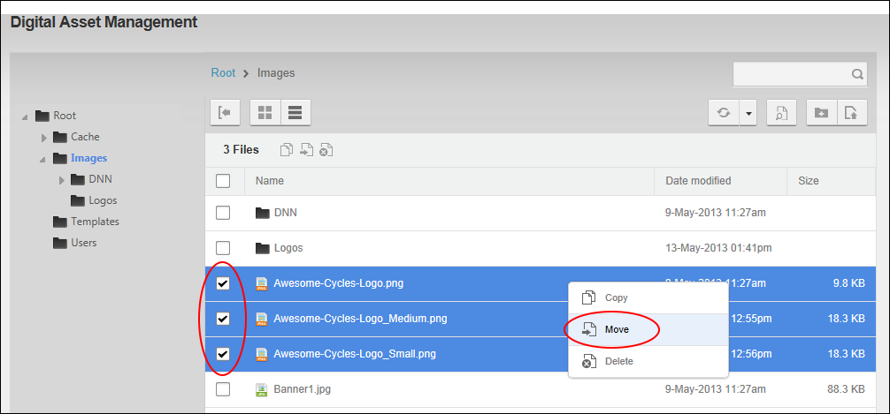
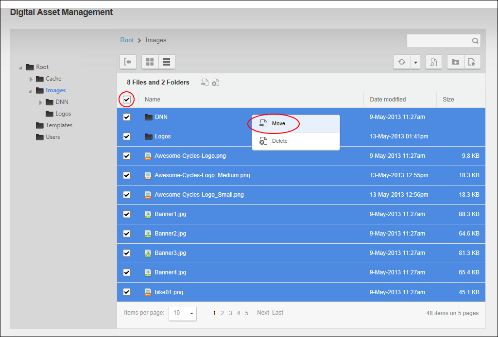
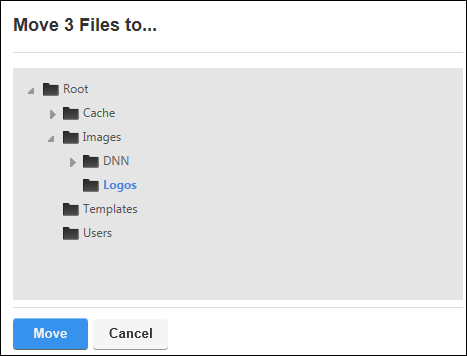

File Management - OR - Go to a Digital Asset Management Pro module.
File Management - OR - Go to a Digital Asset Management Pro module.How to move one or more files and/or one or more folders including all the subfolders and files within that folder of the Digital Asset Management Pro module. Users (including anonymous users) must be granted Write to Folder permission to both the folder where the file or folder is located and the folder that the file or folder is being moved to. Users (including anonymous users) must be granted Copy permission to both the folder where the file or folder is located and the folder that the file or folder is being moved to.
File Management - OR - Go to a Digital Asset Management Pro module.

Moving selected items

Moving all items displayed on this page

Tip: If you are only moving one file or folder, you can simply right click on the item and select  Move from the drop down list.
Move from the drop down list.